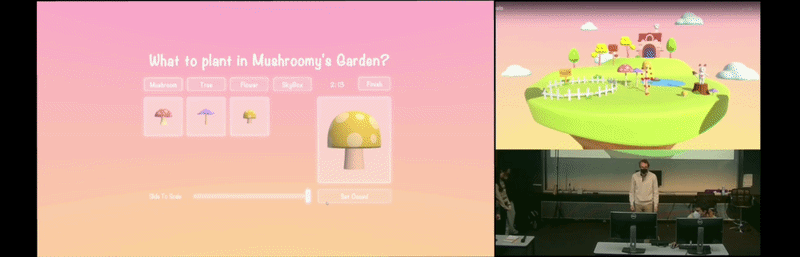
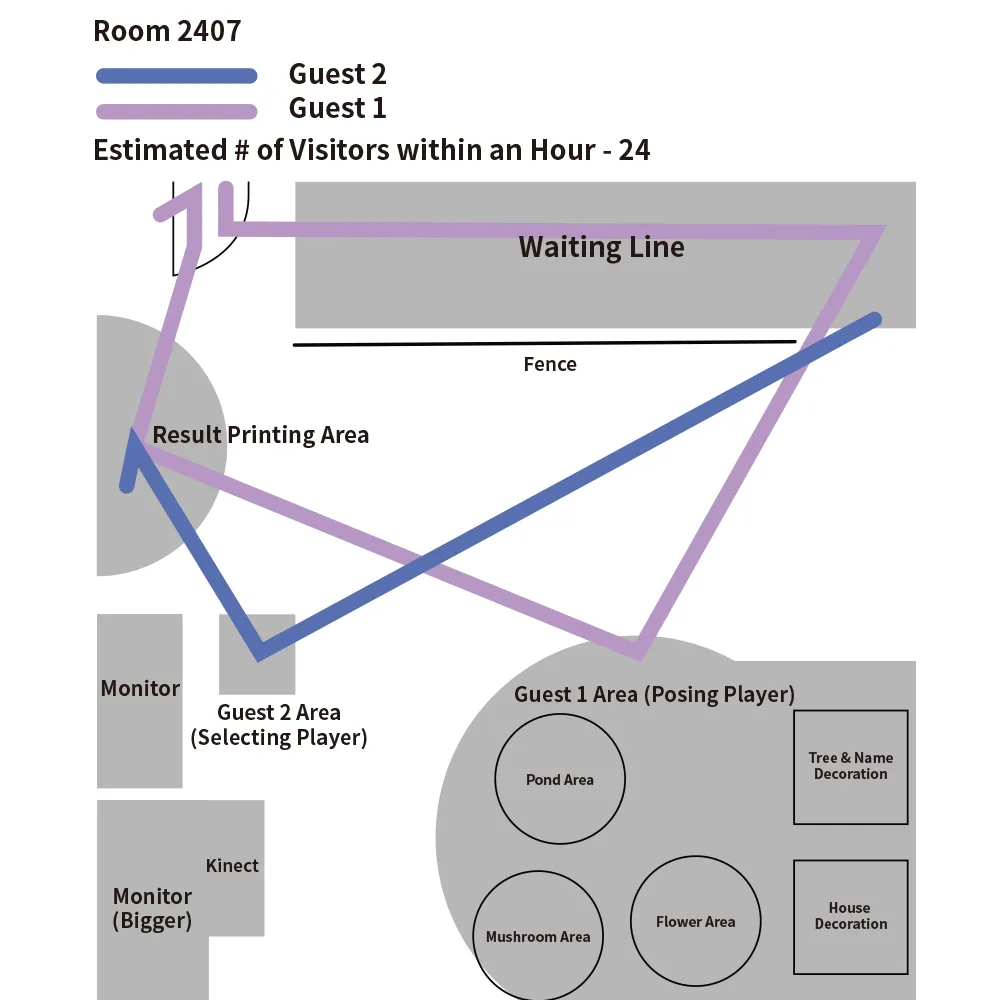
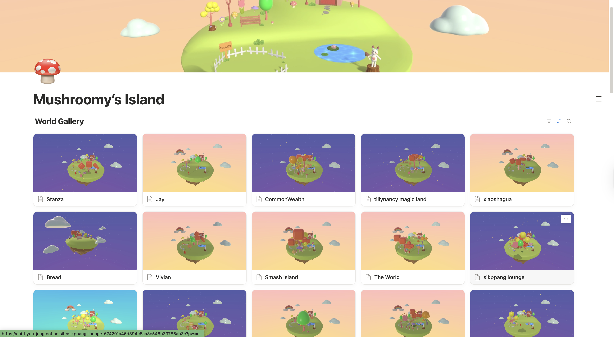

Controller-Free Gestures & Spatial Co-op — full-body poses as the primary input
Translated gross motor movements (full-body poses) into precise digital mechanics, while designing an end-to-end spatial experience for a high-throughput physical exhibition space.
Full Experience
Translating gross motor movements (full-body poses) into precise digital mechanics, while managing a high-throughput physical exhibition space.
Controller-Free Body Tracking & Asymmetric Co-op: Designed an asymmetric co-op loop where Player 1 (Kinect) uses full-body poses to dynamically shape and scale 3D objects, while Player 2 (PC) manages the inventory. Collaborated closely with the programming team to map physical pose data into responsive in-engine mechanics within a tight 2-week sprint.

Extended the experience design beyond the screen. I designed the physical Experience Map for the BVW Festival (optimizing for a 24 guests/hour throughput). By strategically laying out the physical queue lines, spectator monitors, and physical props, I ensured a seamless Location-Based Entertainment (LBE) flow from the real world into the digital space.


Conceptualized a post-game digital souvenir experience. Collaborated with engineers to automatically route gameplay screenshots to a live Notion gallery I designed for the players.
